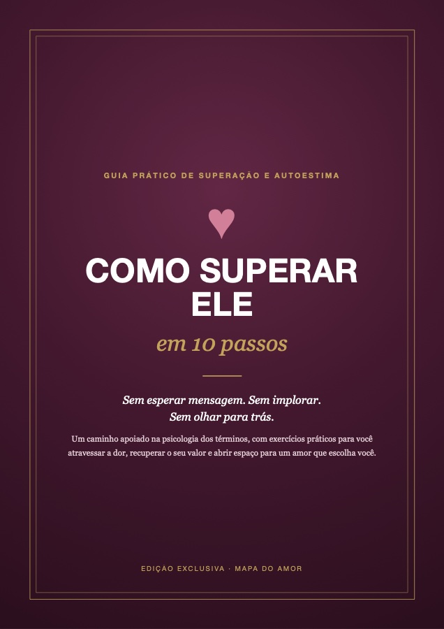

🎁 Oferta exclusiva desta página
E se você não precisasse esperar ele voltar?
Muitas mulheres leem o Mapa e percebem que ainda estão presas a alguém do passado. O amor certo só encontra espaço quando o antigo sai.

Como Superar Ele em 10 Passos
O guia prático para atravessar o término com método, autoestima e exercícios que funcionam. Sem esperar mensagem, sem implorar e sem olhar para trás.
- O que fazer (e o que nunca fazer) nos primeiros dias depois do término
- Como parar de pensar nele o dia inteiro, com exercícios mentais simples
- Como tirar ele do pedestal e enxergar a relação como ela realmente era
- Como reconstruir a sua autoestima e descobrir quem você é sem esse "nós"
- Como quebrar o padrão que te faz repetir a mesma dor, e abrir espaço para um amor novo
- Bônus: plano de 30 dias, caixa de primeiros socorros emocionais e respostas prontas se ele aparecer
Você vai parar de…
✕mandar mensagem de madrugada e se arrepender no dia seguinte
✕stalkear o perfil dele esperando um sinal
✕se perguntar o que fez de errado sem ter resposta
…e vai começar a:
✓atravessar os dias difíceis com um plano claro
✓recuperar o seu valor, sem depender dele
✓abrir espaço para um amor que escolha você
PREÇO EXCLUSIVO PARA QUEM FEZ O MAPA
R$
pagamento único · acesso imediato · Pix ou cartão
SIM, QUERO O GUIA DOS 10 PASSOS →Adicionar ao meu pedido Não quero, quero prosseguir com meu resultado →Guia educativo de autoestima e superação. Não substitui acompanhamento psicológico.